Security Log Understanding
Hybrid LLM-based labeling and dataset construction for fine-grained security analysis in modern software code logs.
PhD Student - Software Engineering Researcher
I study software quality issues, software artifact vulnerabilities, and intelligent methods for understanding code logs, language, and learning systems.
About
I am a PhD student at the University of North Carolina at Charlotte in Computing and Information Systems. My work connects software engineering, security-oriented code artifacts, natural language processing, and machine learning.
Before starting my PhD, I completed an MSc in Computer Science and Engineering at BRAC University and worked as a Senior Software Quality Assurance Engineer at Enosis Solutions.
Research
Hybrid LLM-based labeling and dataset construction for fine-grained security analysis in modern software code logs.
Research on latent security threats and ground-truth construction for evaluating software engineering artifacts.
Federated learning, explainable AI, Bengali speech sentiment analysis, and interpretable health prediction models.
Selected Work
Recent work spans software engineering, security-oriented code logs, explainable AI, federated learning, and Bengali speech sentiment analysis.
A. C. Shruti and R. Krasniqi. IEEE/ACM Automated Software Engineering, Munich, Germany.
R. Krasniqi and A. C. Shruti. 1st International Workshop on Software Engineering for and with Trustworthy LLMs, co-located with FSE 2026. Accepted for publication.
A. C. Shruti and R. Krasniqi. International Conference on Evaluation and Assessment in Software Engineering. Accepted for publication.
A. C. Shruti et al. ICITA 2024, Lecture Notes in Networks and Systems, vol. 1248. DOI: 10.1007/978-981-96-1758-6_3.
A. C. Shruti et al. 2024 IEEE World AI IoT Congress, Seattle, WA. DOI: 10.1109/AIIoT61789.2024.10578980.
A multimodal Bangla speech sentiment recognition method using audio, text, image, early and late fusion, and iterative SHAP-based feature selection.
A. C. Shruti et al. 2023 26th International Conference on Computer and Information Technology, Cox's Bazar, Bangladesh. DOI: 10.1109/ICCIT60459.2023.10441001.
A. C. Shruti et al. Proceedings of the 17th International Workshop on Semantic Evaluation. DOI: 10.18653/v1/2023.semeval-1.99.
A. C. Shruti et al. 2023 IEEE 8th International Conference for Convergence in Technology, Lonavla, India. DOI: 10.1109/I2CT57861.2023.10126334.
A. C. Shruti et al. 2023 IEEE International Conference on Big Data and Smart Computing, Jeju, Republic of Korea. DOI: 10.1109/BigComp57234.2023.00043.
An expert-identifying approach for improving collaborative filtering and reducing dimensionality in recommendation workflows.
Experience
University of North Carolina at Charlotte - ITIS 3300: Software Requirement, Analysis and Test
Enosis Solutions - Dhaka, Bangladesh
Ahsanullah University of Science and Technology - Dhaka, Bangladesh
Education
University of North Carolina at Charlotte - ongoing
BRAC University
Ahsanullah University of Science and Technology
Recognition
Graduate Research Symposium, UNC Charlotte.
University of North Carolina at Charlotte.
BRAC University.
Ahsanullah University of Science and Technology.
Projects and Certifications
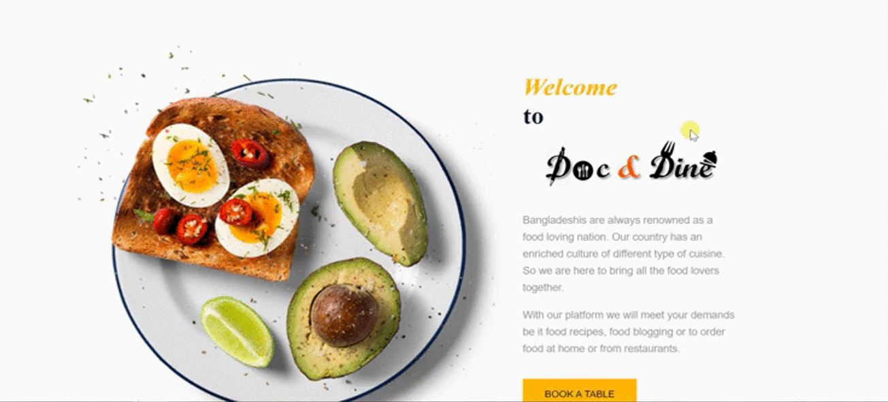
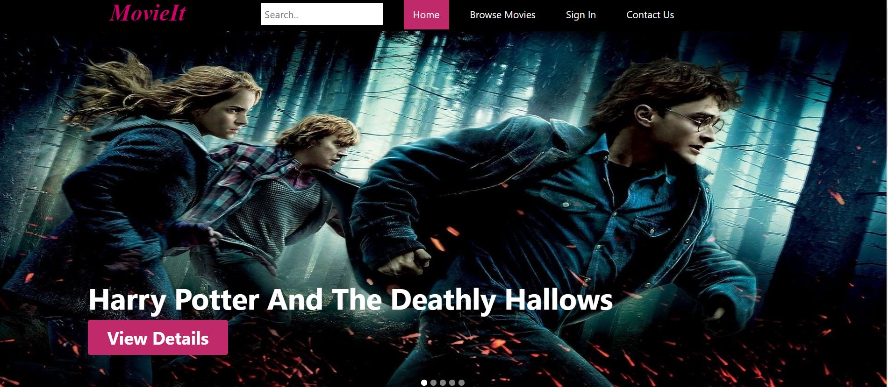
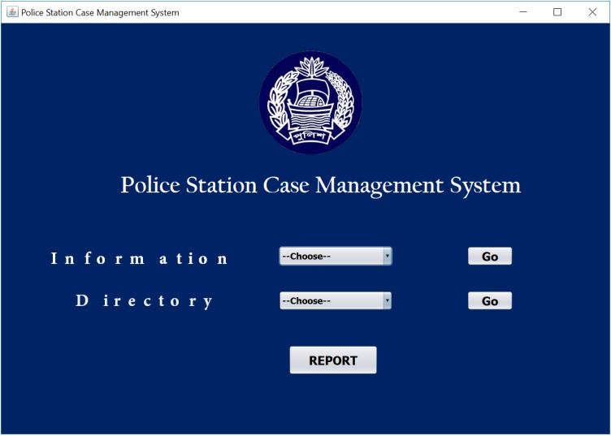
Women safety app.
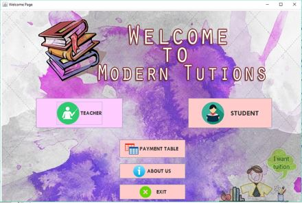
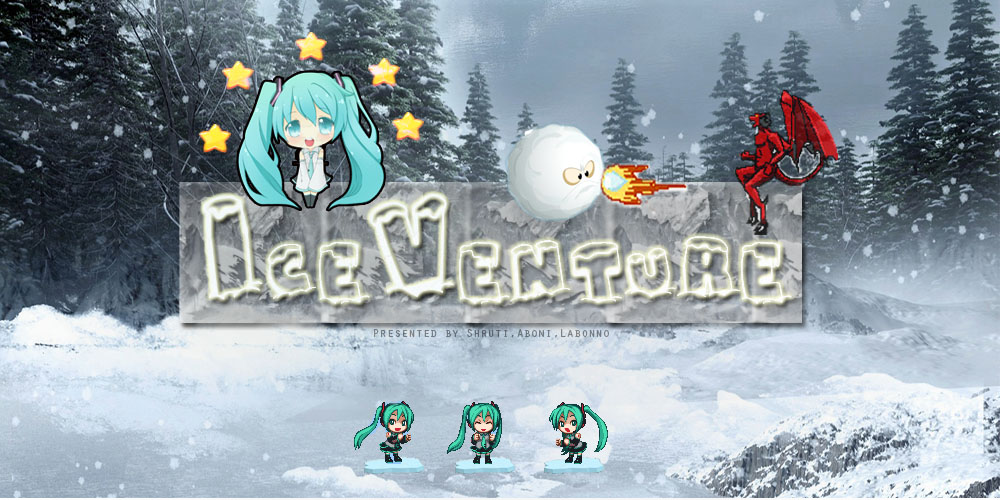
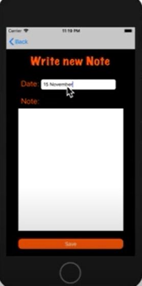
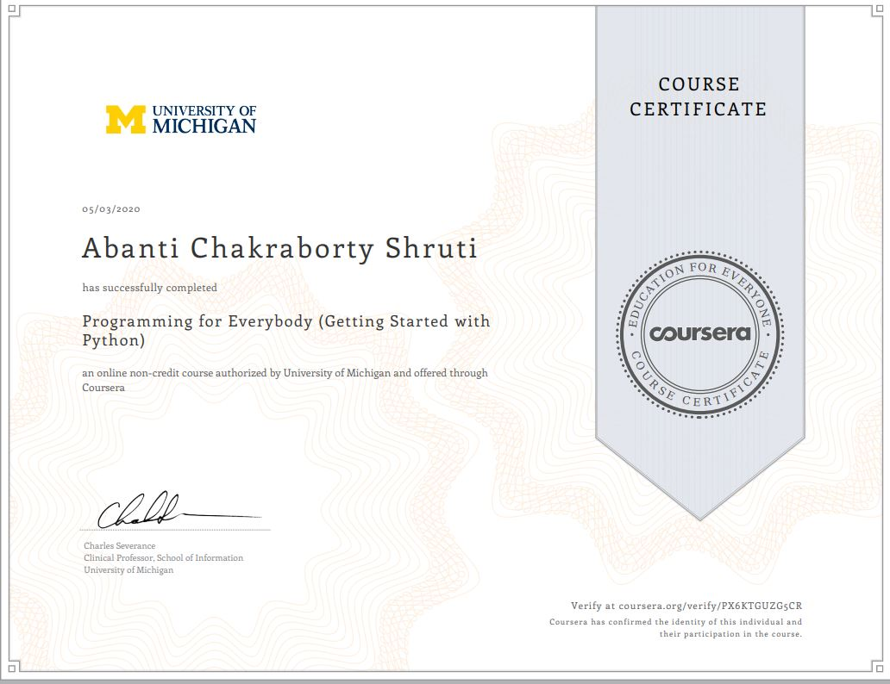
University of Michigan on Coursera.
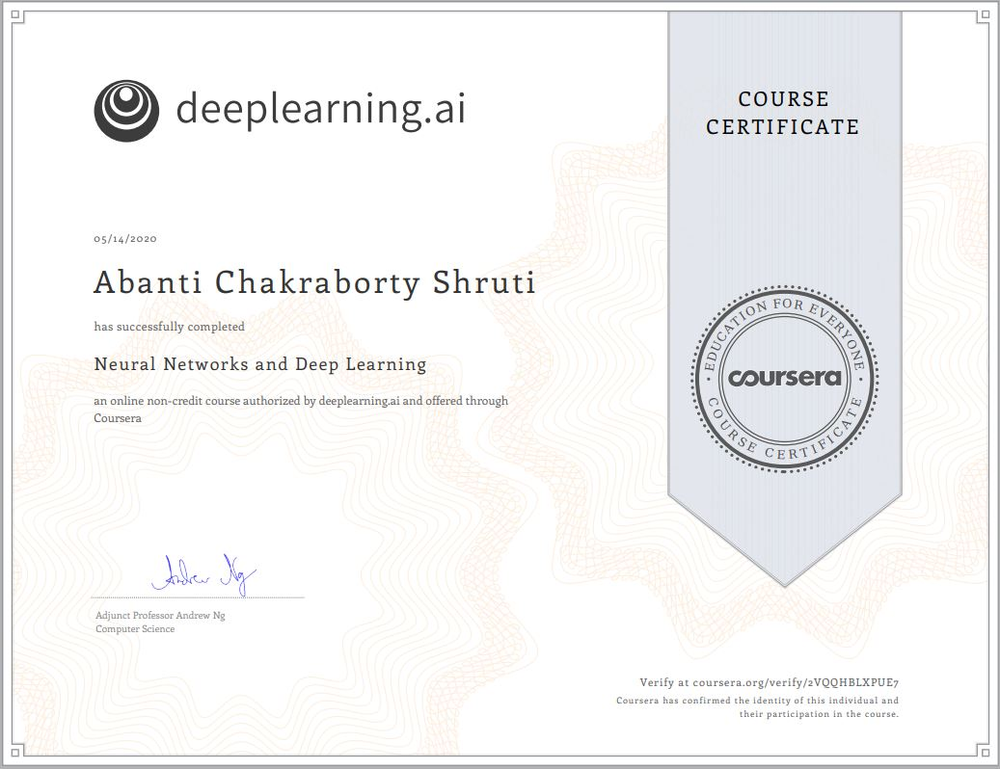
DeepLearning.AI on Coursera.
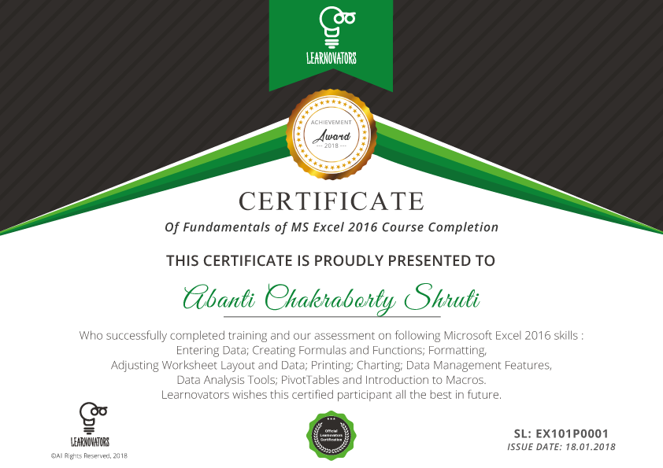
Learnovators.
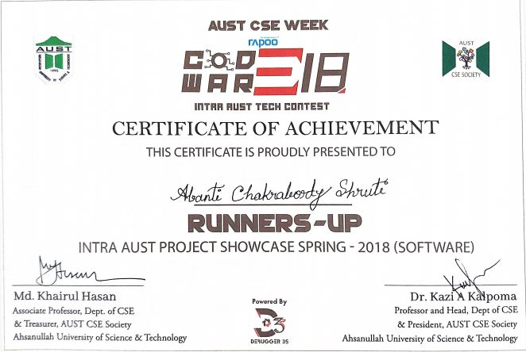
AUST CSE Society.
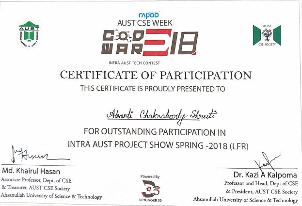
AUST CSE Society.
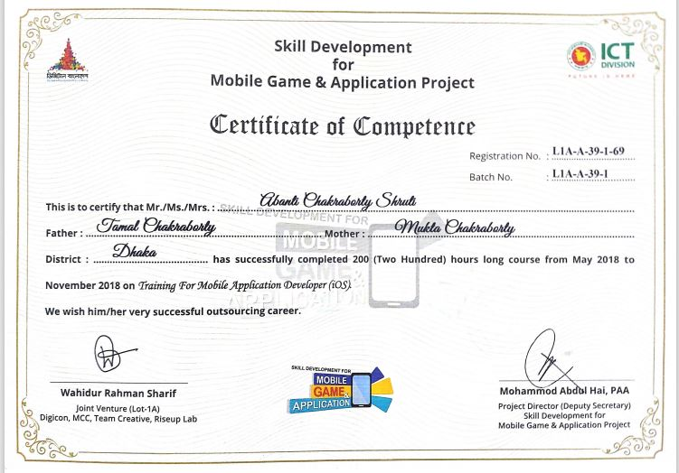
Digicon Lab, ICT Division.
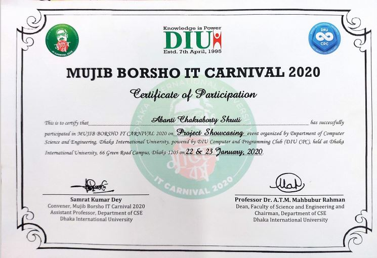
Dhaka International University.
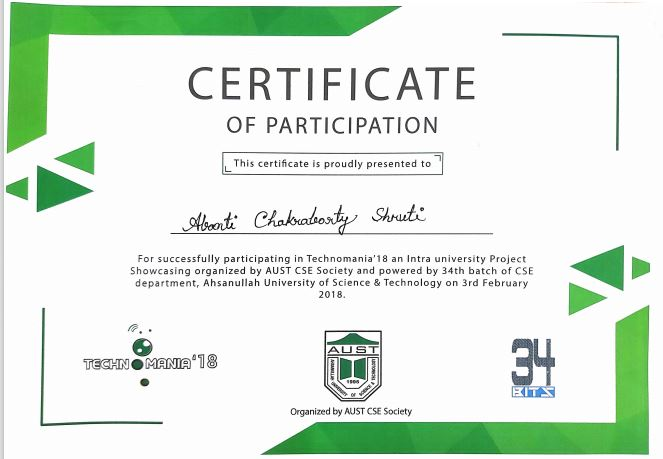
AUST CSE Society.
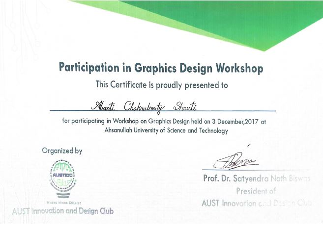
AUST Innovation and Design Club.
Skills
Python, C, C++, Java, C#, MySQL, PHP, SQLite, PL/SQL, JavaScript, Objective-C
Scikit-learn, Pandas, NumPy, PyTorch, TensorFlow, machine learning, deep learning
Cypress, Postman, Selenium, Robot Framework, Jira, Digital.ai, Confluence
VS Code, Google Colab, Jupyter Notebook, PyCharm, MATLAB, LaTeX, Microsoft Office, Google Office tools
Contact